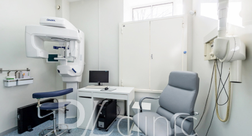
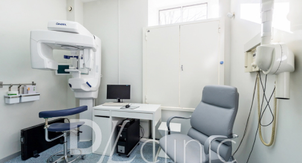

Стоматологическое обследование
 

Когда и кому требуется полное стоматологическое обследование зубов? Полное стоматологическое обследование проводят всем первичным пациентам на консультации для назначения лечения. Также оно рекомендуется тем, кто в течение длительного срока не посещал стоматолога и не приходил на профосмотры, которые нужно посещать каждые полгода. Как правило, в таких случаях стоматологические проблемы не ограничиваются кариесом одного зуба, а носят более комплексный характер.
Методы обследования
К методам обследования стоматологического пациента относятся: опрос, осмотр, а также различные виды рентгенологической диагностики, томографии.
Опрос – это беседа с пациентом, в ходе которой врач выясняет что именно беспокоит пациента, что привело его на прием, какие жалобы на беспокоящий зуб или область,как давно беспокоит проблема, какова динамика процесса (история болезни), каково состояние здоровья в целом (анамнез жизни пациента), перенесенные и хронические заболевания, есть ли у него вредные привычки и т.д.
Полные и правдивые ответы пациента помогают не только правильно поставить диагноз, но и выбрать тактику лечения, спрогнозировать динамику выздоровления.
Виды рентгенологической диагностики в DLclinic
Для проведения полного стоматологического обследования в нашем медицинском центре проводятся различные виды рентгенологической диагностики:
- радиовизиография (для исследования состояния отдельных зубов)
- ортопантомография (для получения обзорного кругового снимка зубов)
- компьютерная томография (для получения послойного трехмерного изображения)
Рентгендиагностическое оборудование, которое используется для диагностики при стоматологическом обследовании в DLclinic, работает в цифровом формате (снимки фиксируются на электронных носителях), благодаря чему доза рентген-излучения во время процедуры в среднем в 10 раз ниже по сравнению с пленочными аппаратами.
В случае Вашего переезда в другой город/страну по письменному заявлению данные, полученные при рентгенологическом обследовании, могут быть записаны на съемный носитель, чтобы вы могли продолжить лечение. Также, если у Вас есть акту-альные (за последние 3 месяца) данные предыдущего обследования (рентген, ортопантомограмма и проч.), Вы можете прине-сти их в нашу клинику.
В нашем медицинском центре Вы можете пройти полное стоматологическое обследование, так как у нас есть все диагностиче-ские возможности и специалисты для правильной диагностики и составления плана лечения.
Медицинский центр DLclinic располагает опытными специалистами, необходимым оборудованием и современным оснащени-ем для проведения полного стоматологического обследования. Правильная диагностика и оптимальный план лечения помо-гают вовремя выявить и устранить проблемы полости рта.